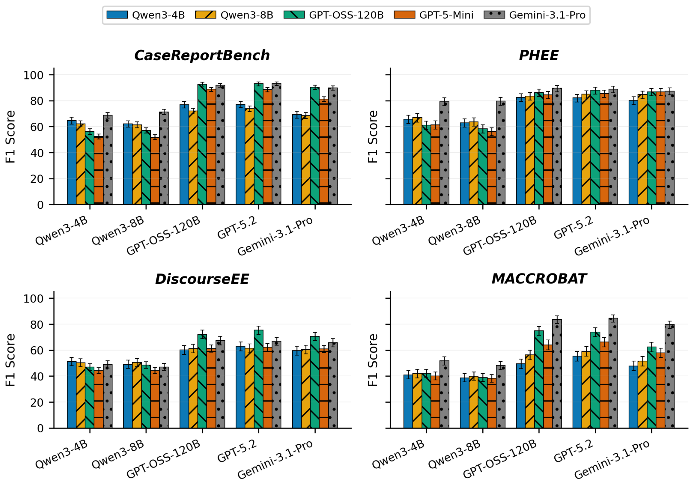
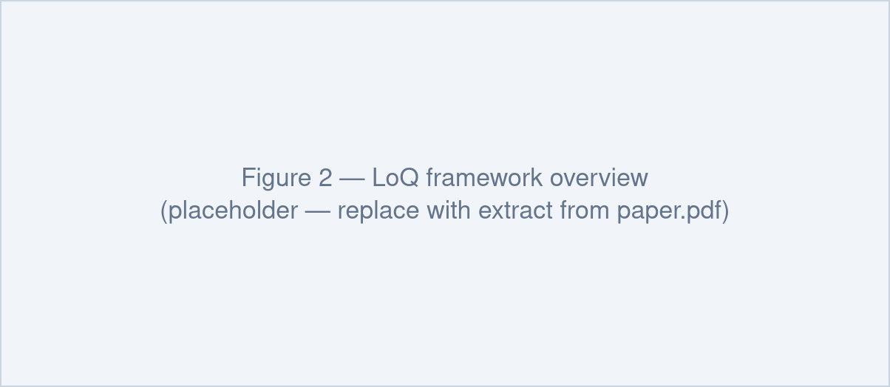
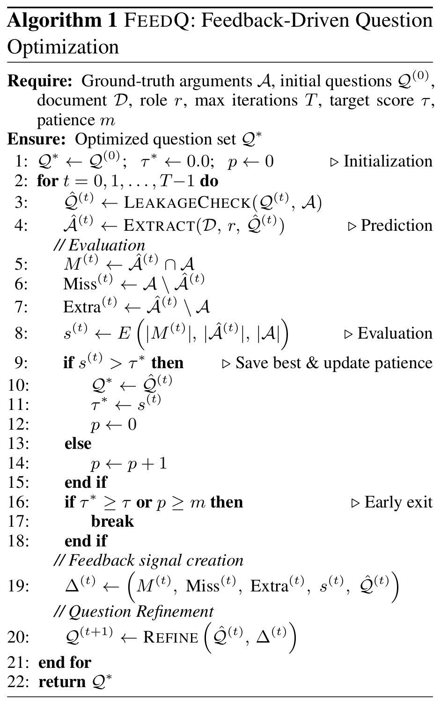
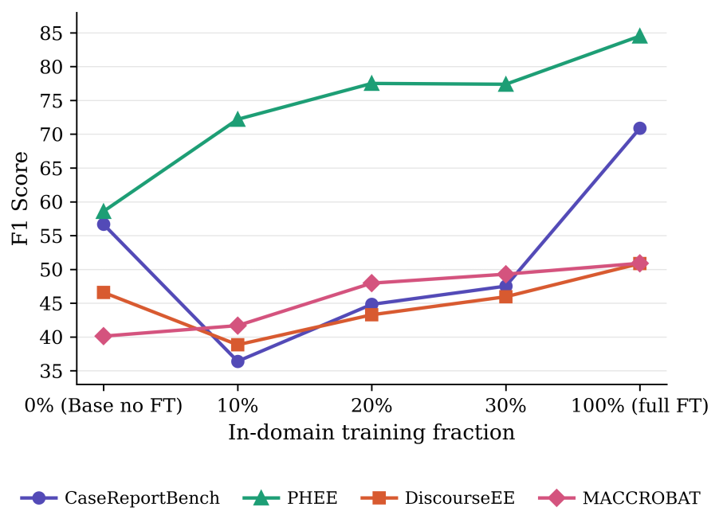
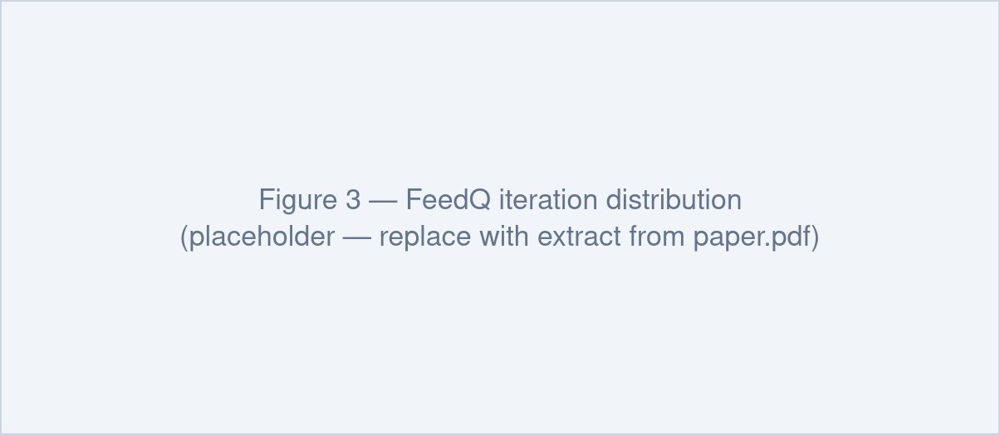
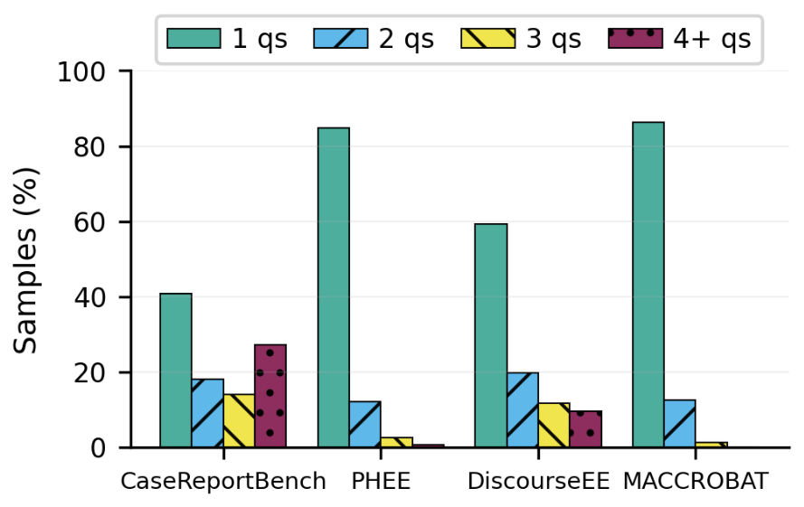

Improving Information Extraction with Learned Queries
Abstract
When information extraction fails, a natural instinct is to improve the model doing it: for example, by scaling it up or refining its reasoning. In this paper, we show that another part of the pipeline matters at least as much: the queries used to elicit this information. Across four clinical benchmarks and five LLMs, improving the question design alone raises performance by ≈18.6 F1-score points, i.e. more than using larger extraction models. To make such question design learnable, we introduce List of Questions (LoQ), which generates document-specific question sets, and FeedQ, a feedback-driven optimization method that iteratively refines questions against extraction outcomes. The resulting optimized questions can be used to train lightweight generators: with fine-tuning, 4B-parameter models match or outperform expert-derived baselines and substantially exceed the performance of much larger untuned models. We release a dataset of 12,825 optimized questions to support a broader shift in information extraction research toward treating question design as a first-class problem.
Question design is the bottleneck
Information extraction is usually recast as question answering: ask a model a question whose answer is the argument you want. In practice those questions are written once from annotation guidelines and reused across every document — easy to apply, but indifferent to how the evidence is actually expressed. To measure what that costs, we hold the prediction model fixed and vary only how the questions are formed.
Mean F1 by questioning strategy
| Approach | CaseReportBench | PHEE | DiscourseEE | MACCROBAT | Mean |
|---|---|---|---|---|---|
| No-Question | 63.3 | 69.3 | 47.4 | 37.9 | 54.5 |
| Human-written knowledge questions | |||||
| Knowledge-Q | 69.7 | 77.4 | 56.1 | 43.5 | 61.7 |
| CoT-Q | 67.9 | 76.3 | 57.2 | 43.0 | 61.1 |
| Dynamic questions generated with GPT-OSS-120B | |||||
| Contextual-Q | 54.6 | 56.0 | 41.7 | 32.0 | 46.1 |
| Zs-FeedQ | 84.5 | 85.2 | 64.4 | 65.6 | 74.9 |
| Opt-FeedQ | 87.2 | 88.4 | 69.3 | 76.2 | 80.3 |
Dev-set F1, averaged across five prediction models. Only the questions change between rows. Zs-FeedQ questions come from one zero-shot pass; Opt-FeedQ questions are iteratively refined with FeedQ. Both see ground-truth arguments during question generation, establishing an upper bound on what well-targeted questions can achieve.
Full per-model breakdown (Table 1)
| Approach | CaseReportBench | PHEE | ||||||||||
|---|---|---|---|---|---|---|---|---|---|---|---|---|
| Qw3-4B | Qw3-8B | OSS-120B | GPT-5-mini | Gemini-3.1 | Mean | Qw3-4B | Qw3-8B | OSS-120B | GPT-5-mini | Gemini-3.1 | Mean | |
| No-Question | 55.6 | 54.9 | 70.1 | 65.2 | 70.6 | 63.3 | 62.8 | 67.8 | 66.2 | 66.4 | 83.3 | 69.3 |
| Knowledge-Q | 62.4 | 61.6 | 75.3 | 71.0 | 78.3 | 69.7 | 76.5 | 79.5 | 75.7 | 71.8 | 83.4 | 77.4 |
| CoT-Q | 62.8 | 57.5 | 73.9 | 67.9 | 77.2 | 67.9 | 69.2 | 73.5 | 76.2 | 78.6 | 84.2 | 76.3 |
| Contextual-Q | 54.3 | 50.6 | 57.9 | 52.5 | 57.7 | 54.6 | 49.3 | 47.5 | 51.0 | 52.9 | 79.5 | 56.0 |
| Zs-FeedQ | 76.9 | 72.1 | 92.7 | 88.7 | 91.9 | 84.5 | 82.5 | 83.5 | 86.3 | 84.4 | 89.4 | 85.2 |
| Opt-FeedQ | 79.2 | 73.4 | 96.9 | 92.4 | 94.0 | 87.2 | 82.3 | 84.8 | 94.3 | 89.8 | 90.6 | 88.4 |
| Approach | DiscourseEE | MACCROBAT | ||||||||||
| Qw3-4B | Qw3-8B | OSS-120B | GPT-5-mini | Gemini-3.1 | Mean | Qw3-4B | Qw3-8B | OSS-120B | GPT-5-mini | Gemini-3.1 | Mean | |
| No-Question | 46.6 | 46.1 | 47.2 | 44.9 | 52.2 | 47.4 | 30.3 | 33.2 | 37.1 | 37.1 | 52.0 | 37.9 |
| Knowledge-Q | 53.0 | 53.8 | 60.5 | 55.6 | 57.8 | 56.1 | 36.6 | 38.3 | 42.1 | 42.5 | 58.1 | 43.5 |
| CoT-Q | 54.7 | 55.7 | 61.9 | 53.6 | 60.1 | 57.2 | 36.9 | 38.6 | 42.5 | 40.0 | 57.1 | 43.0 |
| Contextual-Q | 42.2 | 41.3 | 43.5 | 41.0 | 40.3 | 41.7 | 30.5 | 31.3 | 30.5 | 29.3 | 38.3 | 32.0 |
| Zs-FeedQ | 60.0 | 61.2 | 72.2 | 61.2 | 67.3 | 64.4 | 49.4 | 56.3 | 74.9 | 64.1 | 83.6 | 65.6 |
| Opt-FeedQ | 65.5 | 64.8 | 82.5 | 64.6 | 69.0 | 69.3 | 57.3 | 66.5 | 91.1 | 74.6 | 91.3 | 76.2 |
Choosing the question generator
Running FeedQ means picking a generator, which is a quality/cost trade-off. Across five zero-shot generators, the large models beat the Qwen3 baselines by a wide margin (≈72–76 vs. ≈54 F1). GPT-5.2 is best overall at 76.1, but GPT-OSS-120B is within 1.2 F1 while being over 40× cheaper per token at the time of writing — and its open weights allow local deployment on private data. We therefore use GPT-OSS-120B as the question generator, and for scalability also as the prediction and refinement model.
| QG model | CRB | PHEE | DEE | MBAT | Mean |
|---|---|---|---|---|---|
| Qwen3-4B | 60.8 | 66.8 | 48.3 | 43.3 | 54.8 |
| Qwen3-8B | 60.8 | 64.1 | 47.8 | 40.7 | 53.4 |
| GPT-OSS-120B (used) | 84.5 | 85.2 | 64.4 | 65.6 | 74.9 |
| GPT-5.2 | 85.1 | 85.9 | 65.8 | 67.8 | 76.1 |
| Gemini-3.1-Pro | 79.8 | 85.1 | 63.5 | 59.8 | 72.1 |
Zero-shot question generation quality, F1 averaged over the five prediction models.
Per-prediction-model breakdown (Figure 5)

Why naive document-conditioning backfires
Contextual-Q conditions on the document but has no signal about whether its questions worked — and it lands below the no-question baseline. The reason is visible in the precision/recall split: it generates 5.27 questions per document–role pair on average, which lifts recall on every dataset but collapses precision by inflating false positives. Document conditioning without grounding produces vague queries, and reasoning depth (CoT-Q) does not compensate for a poorly targeted question.
| Dataset | Approach | P | R | F1 |
|---|---|---|---|---|
| CaseReportBench | No-Question | 54.5 | 77.5 | 63.3 |
| Contextual-Q | 40.2 | 85.8 | 54.6 | |
| PHEE | No-Question | 63.6 | 76.9 | 69.4 |
| Contextual-Q | 44.6 | 78.6 | 56.0 | |
| DiscourseEE | No-Question | 37.4 | 65.7 | 47.4 |
| Contextual-Q | 28.8 | 76.3 | 41.7 | |
| MACCROBAT | No-Question | 29.1 | 54.8 | 38.0 |
| Contextual-Q | 22.1 | 57.9 | 32.0 |
Overall precision, recall, and F1 for No-Question and Contextual-Q.
The LoQ framework

LoQ automates the full argument-extraction cycle in three phases:
- Question optimization. Given a document, a role, and its ground-truth arguments, FeedQ runs an iterative loop that derives the questions which best extract those arguments, producing gold question sets.
- Question generation. Those gold questions supervise the fine-tuning of a small question generator, teaching it to produce effective questions from a document and role alone — no ground truth required.
- Prediction. At test time the fine-tuned generator writes questions for unseen documents, and an off-the-shelf LM answers them to extract arguments.
Separating question generation from prediction lets each component specialize.
FeedQ: feedback-driven question optimization
FeedQ alternates generate → predict → evaluate → refine. At each iteration a leakage check rewrites any question that embeds a ground-truth answer, the prediction model answers the surviving questions, and the result is scored against the gold arguments with a hierarchical matcher.
The structured feedback signal — matched, missed, and over-generated arguments plus the scores — goes to a refiner LM, which adds questions targeting what was missed, tightens or drops questions causing over-generation, and preserves the ones that worked. The loop stops on a target F1, on patience, or at the iteration cap, and always returns the best question set seen, since F1 is not monotonic across iterations.
We run FeedQ for up to 5 iterations, patience 3, target score 1.0. The leakage checker's manually audited false-negative rate is 0.83% (5/600 inspected question sets).

Learning to ask, without the answers
FeedQ needs ground truth. The deployable question is whether a model can learn the behaviour and generate good questions for unseen documents. We fine-tune Qwen3-4B and Qwen3-8B with LoRA on the 12,825 FeedQ triples and compare against human-written questions, the same models without fine-tuning, and three much larger untuned generators.
Both fine-tuned models reach 62.7 mean F1, up from ≈53 untuned — and they beat every non-fine-tuned baseline, including GPT-5.2 and Gemini-3.1-Pro, as well as the human-written Knowledge-Q questions on average. A 4B generator outperforms generators orders of magnitude larger, which suggests effective question generation is largely a matter of implementing the right questioning behaviour rather than raw scale.
Test-set F1, averaged across five prediction models
| QG approach | CRB | PHEE | DEE | MBAT | Mean |
|---|---|---|---|---|---|
| Human-written knowledge questions | |||||
| Knowledge-Q | 68.2 | 77.3 | 55.6 | 44.1 | 61.3 |
| CoT-Q | 66.6 | 75.2 | 55.8 | 44.6 | 60.5 |
| Fine-tuned and non fine-tuned QG models | |||||
| Qwen3-4B | 57.3 | 65.8 | 47.7 | 41.5 | 53.1 |
| Qwen3-8B | 59.5 | 63.7 | 46.1 | 41.1 | 52.6 |
| Qwen3-4Bft-a | 67.5 | 80.7 | 51.9 | 49.0 | 62.3 |
| Qwen3-4Bft* | 67.5 | 81.8 | 51.9 | 49.7 | 62.7 |
| Qwen3-8Bft-a | 64.7 | 81.6 | 51.5 | 47.2 | 61.3 |
| Qwen3-8Bft* | 67.7 | 82.0 | 52.5 | 48.4 | 62.7 |
| Strong QG baselines (non fine-tuned) | |||||
| GPT-OSS-120B | 53.3 | 54.0 | 41.4 | 34.1 | 45.7 |
| GPT-5.2 | 63.5 | 69.5 | 46.2 | 40.4 | 54.9 |
| Gemini-3.1-Pro | 66.0 | 80.6 | 50.9 | 42.9 | 60.1 |
All generators here are conditioned only on the document and role — no ground-truth access. ft* is the best of three training mixes per model; ft-a is the all-available mixture. CRB / DEE / MBAT are CaseReportBench / DiscourseEE / MACCROBAT.
The remaining gaps track training data, not method: PHEE and MACCROBAT contribute 5,000 triples each and see the largest gains, while CaseReportBench (620 triples) and DiscourseEE (2,215) are where Knowledge-Q still holds a small edge.
How performance scales with training data (Figure 6)

A separate Qwen3-8B generator fine-tuned on 10/20/30/100% of each dataset's triples, evaluated with GPT-OSS-120B. On the large datasets (PHEE, MACCROBAT) even 10% beats the base model and performance rises monotonically. On the small ones (CaseReportBench, DiscourseEE) 10% drops below base — consistent with catastrophic forgetting — then recovers and overtakes it by 100%.
Out-of-domain generalization
Fine-tuning on clinical questions transfers to non-clinical documents. On DocEE — long, argument-dense news documents — the base model sprays 30 loosely relevant questions while the fine-tuned model asks 4 targeted ones, trading recall for a large precision gain. MUC4 shows the same pattern. GENEVA is the exception: it annotates multiple coreferent arguments per role in a single sentence, so the base model's broader question sets happen to provide coverage that focused questions give up.
| Dataset | Qwen3-4B | Qwen3-8B | ||||
|---|---|---|---|---|---|---|
| P | R | F1 | P | R | F1 | |
| Base | ||||||
| DocEE | 33.35 | 82.88 | 46.53 | 35.58 | 83.82 | 49.20 |
| GENEVA | 48.33 | 77.51 | 59.13 | 47.38 | 77.66 | 58.30 |
| MUC4 | 45.98 | 80.20 | 57.45 | 47.21 | 80.14 | 58.56 |
| Fine-tuned (ft*) | ||||||
| DocEE | 49.18 | 63.63 | 55.28 | 48.38 | 68.65 | 56.65 |
| GENEVA | 49.73 | 56.43 | 52.82 | 49.66 | 56.65 | 52.88 |
| MUC4 | 53.82 | 61.86 | 57.30 | 54.34 | 67.24 | 59.90 |
Zero-shot out-of-domain results on 500-sample subsets, averaged across all evaluator models.
What the optimized questions look like

Iterative refinement is not redundant. One pass suffices for most roles in PHEE (87%) and MACCROBAT (75%), but 47% of DiscourseEE roles and a quarter of CaseReportBench roles need two or more iterations to reach their best question set.

One question per role is often not enough. CaseReportBench gives only 41% of roles a single question; 59% get two or more and 27% need four or more. Roles in structurally rich schemas have to be decomposed.
Vanilla question vs. List of Questions
Vanilla question
What laboratory test results or imaging findings are reported (e.g., MRI, CT, X-ray, biochemical tests)?
List of Questions
- Was a prostate specific antigen (PSA) level reported?
- What calcification findings were described on the pelvic X-ray?
- What calcification findings were described on the CT scan?
- What substance was identified in the urine biochemical analysis?
- What components were identified in the biochemical analysis of the extracted prostatic calculi?
Vanilla question
What are the outcomes or side effects of the treatments?
List of Questions
- What sleep disorder did the patient develop after starting fluoxetine therapy?
- According to the polysomnography study, how many months after fluoxetine discontinuation did this disorder persist?
Vanilla question
What are the drugs used as therapy in the event?
List of Questions
- What antiarrhythmic drug was administered to the patient?
- What antimonial medication was administered to the patient?
Vanilla question
What are the tapering steps (drugs, start dosage, duration, goal dosage)?
List of Questions
- What is the duration of the Suboxone taper before the individual stopped?
- What dosages of Suboxone were taken during the taper and in what order?
- What concerns does the individual express about potential withdrawal?
- What does the individual intend to do regarding Suboxone use after the taper?
Vanilla question
What were the test results, measurements, or laboratory values from the diagnostic procedure?
List of Questions
- What is the hemoglobin concentration reported in the admission blood test?
- How is the hemoglobin level described qualitatively?
Vanilla question
What is the dosage, amount, or quantity of the medication?
List of Questions
- What is the concentration of the sodium bicarbonate infusion administered?
- What is the daily amount of sodium bicarbonate given?
Bold text in each excerpt marks the distinct arguments the optimized questions target. Simple multi-argument roles get two targeted questions; complex roles get a set.
Dataset: 12,825 optimized questions
We release every (document, role, optimized question-set) triple produced by FeedQ, so that question design can be studied — and improved on — as a component in its own right. Each record has the document text, the target role, the optimized question set, and the ground-truth arguments used during optimization.
| Dataset | Train | Dev | Test | Roles | Avg. doc len | Domain |
|---|---|---|---|---|---|---|
| CaseReportBench | 620 | 350 | 350 | 18 | 581.7 | Clinical case reports |
| PHEE | 5,000 | 500 | 500 | 14 | 19.7 | Pharmacovigilance texts |
| DiscourseEE | 2,200 | 500 | 500 | 34 | 120.8 | Online health forums |
| MACCROBAT | 5,000 | 500 | 500 | 22 | 24.2 | PubMed case reports |
Optimized triples per dataset: 620 / 5,000 / 2,200 / 5,000 — 12,820 in total.
Source benchmarks: CaseReportBench · PHEE · DiscourseEE · MACCROBAT (via DICE).